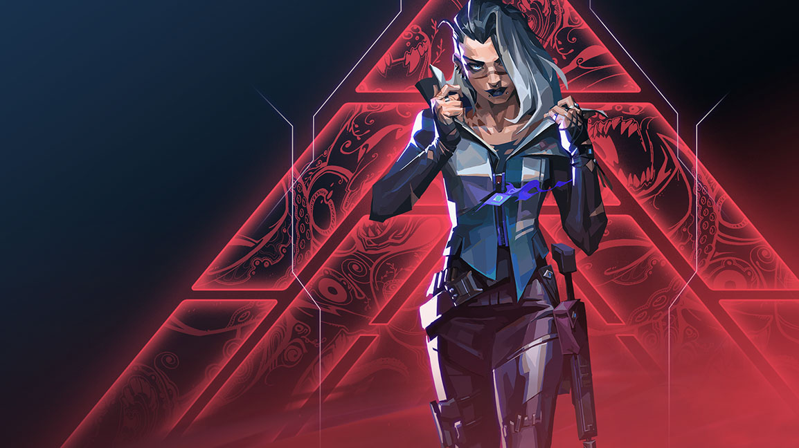
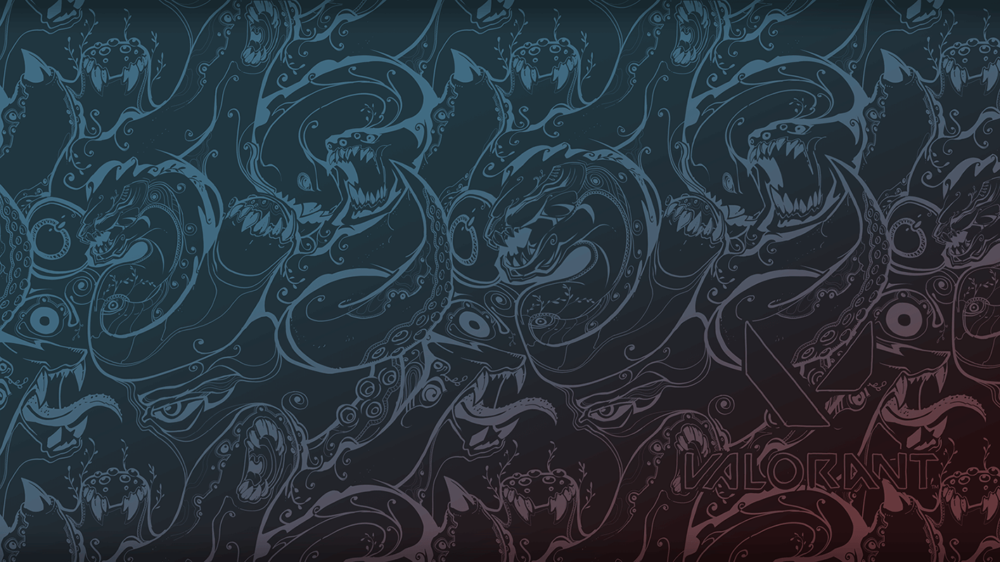
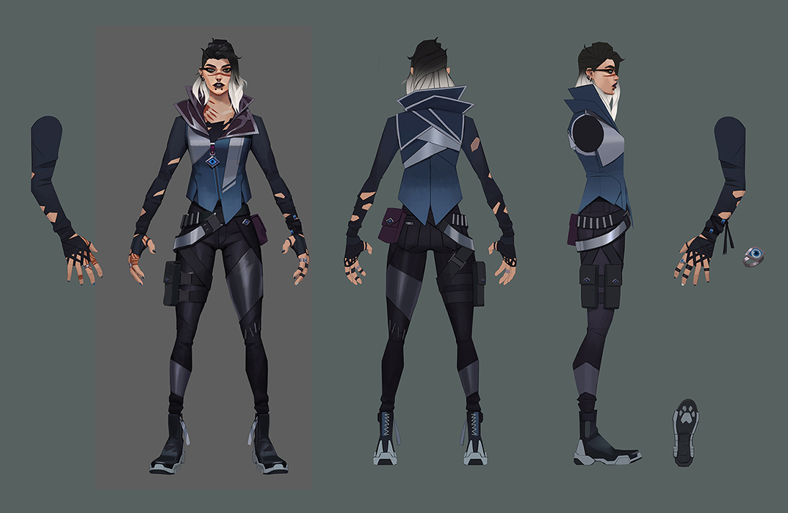

06/06/22
GAME UPDATESVALORANT AGENT INSIGHTS: FADE
What is it you fear most? Is it rejection? Loneliness? Do your doubts and insecurities haunt your dreams? Are you afraid that maybe you really do belong in Bronze after all?
We all know fear. We learn it at a young age: The monster under the bed, a dark hallway at night, mom leaving you alone in the checkout line. We’ve all tasted the primal sour of fear and felt the haunting itch it leaves under your skin.
Now fear has a name: Fade.
THE BOUNTY HUNTER
Before Fade was the embodiment of fear—before she was even Fade—she was a gameplay idea: reconnaissance.
“When deciding what to make for Agent 20, we knew we needed someone who could compete with Sova. He sort of has the monopoly on reconnaissance in VALORANT, and we wanted another Agent that has similar strengths,” explains Game Designer Nick “Nickwu” Smith.
That left Smith with the simple task of narrowing in on a gameplay fantasy that relies on information gathering while feeling meaningfully different from Sova, the only other reconnoiter.

Sova requires knowing lineups for each map—those sweet spots for the perfect site-to-site Recon Bolt to give your initiators and duelists the information they need to push while you stand back and defend their flank. He’s got recon from afar on lock. So when Smith was designing an Agent who could compete, he decided to try a kit that felt more localized to counter Sova’s range.
“The idea of a bounty hunter stood out from the beginning because they use all sorts of information-gathering components to hunt down their bounty. It’s a lot more personal than shooting an arrow from somewhere really far away and relaying that information to your team,” explains Smith.
“I had the idea of hunting deer—tracking them down, trapping them, then making the kill,” he pauses and laughs. “I’ve actually never been hunting before. I have no idea what it’s like. But it’s that mentality of ‘I know where you are, I’m going to lock you down, and then I’m gonna get ya’ that I wanted for Fade.”

Fade’s trails were one of the first mechanics Smith explored. The goal was to track “bounties” in a way that felt up close and personal.
“Because of how VALORANT’s core gameplay loop works, we needed Fade’s hunting footprint to be broader than just honing in on one enemy,” he explains. “If you hunt just one opponent at a time it’s really strong thematically with the bounty hunter approach, but when it comes to gameplay it means you’re not a very strong Agent. Tactically you cannot exert enough force on the enemy team—or alternatively we’d have to make it so powerful that you’re almost guaranteed to kill that one person, and it becomes an awful experience to play against.”
{kind=link}
The solution was to give Fade trails on every enemy hit by her abilities, and to let them see their own trails.
It gives Fade the chance to play with her prey. Will she follow your trail or someone else’s? Will she relay this information to her team? Or will she leave you alone cowering behind a corner?
“The thing we discovered as we played the kit was that as the person playing Fade, you feel like you’re gathering information, tracking and hunting down people, and then executing them with that information,” Lead Character Producer John “Riot MEMEMEMEME” Goscicki shares. “And then on the flip side when you’re the one being hunted by Fade, it’s an anxiety-inducing, terrifying experience. So we decided to lean into that feeling of what it’s like to play as, and play against, this character. And that’s what led us to the darker, edgier thematic.”
WHEN NIGHTMARES BECOME REALITY
When developing new Agents, the team draws on inspiration from many sources, but the main one is simple: people. The universal human experience that connects us all, no matter what we believe, who we are, or where we call home. Things like contentment, hope, dreams; anxiety, fear, nightmares.
But one side of that parallel evokes a stronger reaction. And that side is a bit underrepresented in the current Agent roster.
Outside of Omen—and arguably Yoru or Reyna—there aren’t that many “xX420edgel0rd69Xx” Agents. In fact, most of the Agents released recently are pretty upbeat. Neon’s caring beneath her snark, Chamber’s insanely French charming and egotistical, and KAY/O’s a deeply loyal robot (as long as you’re not a Radiant).
After seeing Fade’s kit, it became clear to the team they were making someone a bit darker.
“The bounty hunter fantasy was so crystal clear that all the narrative work sort of just fell into place,” recalls Narrative Writer Ryan “Pwam” Clements.
Clements and Narrative Lead Joe “ParmCheesy” Killeen pitched a few different ideas for Fade’s thematic fantasy, but one stood above the rest: living nightmares.
{kind=link}
Nightmares presented an interesting opportunity as a power fantasy. We all have them, they cause deep rooted fear, and it’s a unique source of power for VALORANT.
“The way we integrated nightmares into Fade’s kit made a lot of sense with the way we all felt playing against her in playtests. It was this high stakes, anxiety-inducing experience when you got tagged by her trails, and we wanted to keep that feeling throughout her design,” Smith explains.
In addition to the unique power source, nightmares and Fade’s edgier thematic meant she has a much more unique color palette compared to the rest of the roster.
“The hardest part of designing new Agents from a concept art perspective is keeping their color palettes unique. All of the basic colors have been taken already, and we need to figure out color combos that feel unique while still being readable in game,” shares Concept Artist Konstantin “Zoonoid” Maystrenko.
“Since we decided on her being the nightmare lady, we wanted to keep Fade’s colors more toned down and leaned more heavily into greys and blacks. But black is a difficult color for a competitive game, as it doesn’t provide as much contrast and readability with the in-game environment,” he continues.
Apart from Fade’s color palette, Maystrenko wanted to give her a modern, stylized outfit. The idea he settled on was urban fantasy. A lot of fantasy in modern media is based in fantastical realms full of fae, elves, and dragons, but there aren’t as many sources of representation for someone burdened with such a powerful magical ability who also grew up in an inner-city.
So he asked himself, “How would she act? What would she look like? How do these nightmare powers manifest in the way she represents herself?

(MAYSTRENKO TRIED TO STRIKE THE RIGHT BALANCE BETWEEN AN APPEALING AND EDGY DESIGN)
As Maystrenko and Clements were locking in the living nightmare fantasy for Fade’s thematic, Smith began implementing this into her gameplay.
“I was thinking about ways to introduce a lot of fear and anxiety in Fade’s kit after we had decided on that being her thing,” Smith recalls. “Most of Fade’s kit is more localized and up-close, but her ultimate, Nightfall, is a lot more broad. It’s less about making individual enemies feel targeted and operates much more like a standard Initiator ult, similar to Breach’s. It provides for a lot of interesting gameplay opportunities for how it applies the trails and makes opponents deaf.”
Sound is incredibly important in VALORANT. You can hear enemies rotating, rushing, or reloading. It can be the thing that saves you from certain death—or the thing that guarantees victory. Not being able to hear enemies puts you at a tactical disadvantage, and this became the perfect opportunity to inject even more fear in Fade’s kit.
“With a lot of other ultimates in the game, you can still tell if your opponents are rushing you down if you’re hit because they’re making noise. But when you lose the ability to hear it’s like... well shit I don’t know,” Smith adds. “And then Fade has your trail and knows your position on top of it, so it makes you anxious. With that fear comes the opportunity to create more misplays, which is something she uniquely brings to the roster.”
EVERYONE EATS FOOD
“We have a goal on VALORANT to be unapologetically global. The world is full of interesting and amazing people, and there’s no shortage of creative ideas, stories, and inspiration to pull from in every country,” Goscicki shares. “A lot of people in Turkey play VALORANT—like, a huge amount. And in the same way we saw an opportunity to make another recon Agent, we also saw the opportunity to make a character that Turkish players could potentially relate to.”
(FADE’S HETEROCHROMIA IS INSPIRED BY TURKISH ANGORA CATS)
There are things about Fade that should stand out as clearly Turkish at first glance. The nazar boncuğu is a symbol common in the Mediterranean and is used to ward off the evil eye, a curse brought about by a malevolent look. And the design can be seen all over Fade, from the pendants on her clothing, to the ring she wears.
But there are some surprising additions the team wasn’t aware were part of Turkish culture at the start.
(EARLY EXPLORATION OF FADE’S FIRST-PERSON POV)
In Turkish culture henna signifies sacrifice: Sacrificing your single life to join your spouse’s family, your personal life to join the military, or even an animal sacrificing its life to provide food. Fade is no stranger to sacrifice. She deals with peoples’ darkest fears and most upsetting thoughts to wield her nightmarish powers while sacrificing her own sanity and comfort.
“Many of our Agents have tattoos. It’s not exactly a meme with players, but it’s one among the concept artists,” Maystrenko laughs. “VALORANT uses a first-person POV, and so we need to get creative to express character uniqueness with players. Tattoos or skin markings are one of the clearest ways to do this. So when we learned that henna is common and popular in modern Turkey, it was an obvious choice to include.”

“Turkey being Fade’s country of origin worked out in a really lovely way because, as the different elements began to take shape, there was a lot of cultural resonance we noticed,” Clements says. “We worked closely with the Rioters in our Turkey office and they informed us of the deep, profound respect to dreams in Turkish culture and superstition. Dream reading and dream seeing are longstanding cultural practices in Turkey, and it just fit so perfectly with this nightmare-wielding bounty hunter that is Fade.”
Now, we’re not saying that every single player in Turkey is an edgy goth mommy with henna who uses her nightmare powers to hunt down people in Istanbul’s criminal underbelly. Maybe you’re a crazy cat lady instead.
“Istanbul is the cat capital of the world. And cat culture is not just a Turkish thing. It’s universal. Everyone loves cats!” Maystrenko said. “We wanted to add some nods to that part of her life in her visuals without it being so in your face that she just became the cat Agent.”

“We wanted to build this creature out of the things she loves and sees,” he continues. “Her nightmares blend with the things that aren’t dangerous in real life, but in her nightmares everything becomes something that can kill you. We tried to make it sort of abstract so it wasn’t immediately obvious. At first glance it looks like some creature that came from hell, but in reality it’s just two cats.”
All of these things came together beautifully in her visual effects.
“I thought a lot about the art style for Fade’s ultimate VFX, and how best to represent her and her roots in it. It started out as a straightforward henna style pattern, but it didn’t look quite right. It was very old-fashioned looking, so it sort of looked like wallpaper,” explains VFX Artist Guillermo “Giggy” la O’. “There are nazars within the effects—you’ll actually see a lot of eyes, but some of them are Fade herself. And her Prowler cat is also present. I took all of these things and used flow of the henna patterns to connect them so it’s less hardcore and more soft.”
And if that’s not enough cats for you, yes, those are toe beans on the bottoms of her boots.
And there she is in all her nightmarish gothy glory: Fade. Tenacious, terse, haunted. It can be easy to see the bounty hunter who wields such a terrible and frightening power and assume she has evil intentions. But does she, really?
“When people look at Fade and then ask me if she’s evil, I sort of take that question personally,” Goscicki explains. “Growing up in the metal scene, I think there’s often a stereotype that it’s a bunch of blunt, grungy, intimidating assholes. But when you’re on the inside of that scene, you know everyone’s a fun-loving, goofy crowd. They just choose to express themselves differently than the societal norm.”
Goscicki continued, “I think Fade’s the perfect example of how you appear at first blush isn’t always going to be representative of who you really are inside. I just hope that players get to see that other side of her as well.”
TAGS:
FADE